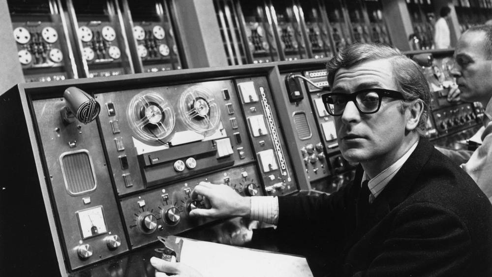

Internet adalah jaringan komputer yang pertama kali di bentuk tahun 1969 di Amerika Serikat oleh Departemen Pertahanan. Sejarah internet di mulai dengan adanya proyek ARPA yang terus mengembangkan jaringan dengan nama ARPANET, mereka melakukan pengujian pada hardware beserta software berbasis UNIX pada sebuah komputer.
Tujuan proyek tersebut di bangun pada awalnya hanya untuk keperluan militer saja. Saat itu, US Department of Defense yang telah membuat jaringan yang kemudian disebar dan menghubungkan rangkaian computer di beberapa daerah guna menanggulangi adanya serangan nuklir serta menghindari terjadinya informasi terpusat yang bisa membuat perang dihentikan.
ARPANET hanya bisa menyambungkan 4 situs saja pada awalnya, yaitu University of Utah, Stanford Research Institute, Unversity of California, dan Santa Barbara. Mereka membentuk sebuah jaringan pada tahun 1969 kemudian secara umum, ARPANET diperkenalkan pada tahun 1972 kemudian menyebar luas.
Karena proyek ini sangatlah luar biasa, banyak unversitas di berbagai Negara ingin ikut serta, karena itu lah ARPANET menjadi kewalahan. Untuk mengatasinya, ARPANET kemudia di belah menjadi dua yaitu MILNET dan ARPANET. MILNET untuk keperluan militer sedangkan ARPANET untuk kebutuhan kecil (Non-militer) seperti yang di pergunakan universitas.